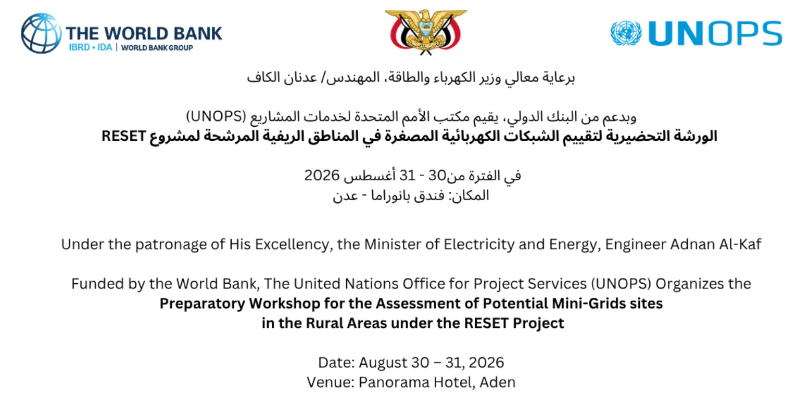

آخر المستجدات والإنجازات في قطاع الطاقة
العودة للرئيسية
ورشة عملأقيمت، برعاية وزير الكهرباء والطاقة المهندس عدنان الكاف وبدعم من البنك الدولي، ورشة العمل المصغرة الخاصة بتقييم ودراسة الشبكات الكهربائية المصغرة في المناطق الريفية المستهدفة، ضمن أنشطة المكوّن الثاني من مشروع تعافي قطاع الكهرباء من اجل انتقال عادل في اليمن (RESET)، وبمشاركة الجهات والكوادر الفنية ذات العلاقة.
🗓️ الفترة: 30 - 31 أغسطس 2026
📍 المكان: فندق بانوراما - عدن
👤 الراعي: معالي وزير الكهرباء والطاقة المهندس عدنان الكاف
🤝 الداعم: البنك الدولي